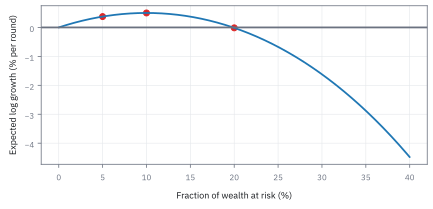
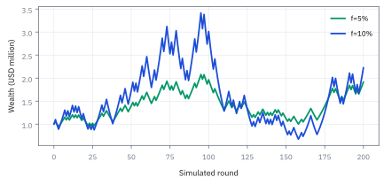
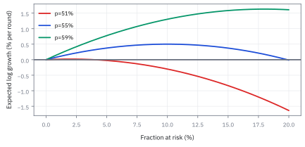
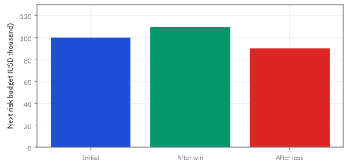
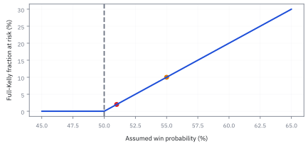

17.2 The Kelly Criterion
เลือกขนาดสถานะจากการเติบโตของทุน โดยเผื่อสิ่งที่เรายังไม่รู้
พอร์ตลงทุนมีโอกาสชนะ 55% โอกาสแพ้ 45% อัตราจ่าย 1 ต่อ 1 (ชนะได้กำไร \$1 ต่อ \$1 ที่เสี่ยง แพ้เสีย \$1) ควรกำหนดขนาดเงินเสี่ยงกี่เปอร์เซ็นต์ของทุนต่อรอบ จึงจะทำให้อัตราทบต้นระยะยาวสูงสุด?
เฉลย: ควรกำหนดขนาดไม้ 10% ของทุน; ที่ขนาดนี้ ทุนจะเติบโตแบบทบต้น 0.501% ต่อรอบ (100 ไม้โตเป็น 165.0%) ขณะที่การลงเกิน 20% จะทำให้อัตราทบต้นติดลบจนหมดตัว
ศัพท์ที่ใช้ในหัวข้อนี้
- Kelly criterion
- กฎเลือกสัดส่วนทุนที่ทำให้ค่าเฉลี่ย logarithm ของการเติบโตสูงสุด ใช้กำหนดขนาดความเสี่ยงเมื่อนำทุนไปลงทุนต่อเนื่อง
- fractional Kelly
- การใช้สัดส่วนเพียงบางส่วนของขนาดตามสูตร เช่น ครึ่งหนึ่ง ใช้ลดความผันผวนและความเสี่ยงในการเจ๊ง
- leverage
- การถือสถานะมากกว่าเงินทุนตนเองด้วยการกู้ยืม ใช้ขยายผลตอบแทนและความเสี่ยงไปพร้อมกัน
- drift
- อัตราการเปลี่ยนแปลงเฉลี่ยของราคาสินทรัพย์ต่อหน่วยเวลา ใช้กำหนดแนวโน้มการเติบโตในแบบจำลองต่อเนื่อง
- volatility
- ความผันผวนของผลตอบแทนวัดด้วย standard deviation ใช้ประเมินความไม่แน่นอนของราคา
สัญลักษณ์ที่ใช้ในหัวข้อนี้
| สัญลักษณ์ | ความหมาย | หน่วย |
|---|---|---|
| $W_0,W_n$ | ทุนเริ่มต้นและทุนหลัง n รอบ | USD |
| $f$ | สัดส่วนของทุนที่ลงในไม้เดียว เป็นตัวที่หัวข้อนี้หาค่าที่ดีที่สุดของมัน | ไม่มีหน่วย |
| $b$ | ได้กี่เท่าของเงินที่เสี่ยงเมื่อชนะ | ไม่มีหน่วย |
| $p$ | โอกาสชนะ | ไม่มีหน่วย |
| $q$ | โอกาสแพ้ ซึ่งเท่ากับหนึ่งลบโอกาสชนะ | ไม่มีหน่วย |
| $g(f)$ | ค่าเฉลี่ยการเติบโตแบบ logarithm | ต่อรอบ |
| $\mu$ | อัตราที่สินทรัพย์คาดว่าจะโต | ต่อปี |
| $r$ | อัตราที่เงินสดได้โดยไม่เสี่ยง | ต่อปี |
| $\sigma$ | ความผันผวนของสินทรัพย์ เป็นตัวที่ลงโทษการเดิมพันหนักในสูตร | ต่อรากปี |
| $a,B_t$ | สัดส่วนทุนในสินทรัพย์และการเคลื่อนไหวสุ่มมาตรฐาน | ไม่มีหน่วย, รากปี |
ที่มาที่ไป: สูตรจากทฤษฎีข้อมูล ที่นักพนันเอาไปใช้ก่อนนักการเงิน
John Kelly ทำงานที่ Bell Labs และเขียนบทความนี้ในปี 1956 โดยไม่ได้คิดถึงการลงทุนเลย เขาสนใจปัญหาว่าถ้ามีข้อมูลลับที่ส่งมาผ่านสายที่มีสัญญาณรบกวน ควรใช้มันอย่างไรให้คุ้มที่สุด
คำตอบที่เขาได้คือสูตรขนาดเดิมพันที่ทำให้ทุนโตเร็วที่สุดในระยะยาว
นักพนันมืออาชีพเอาไปใช้ก่อน โดยเฉพาะในวงการนับไพ่ ก่อนที่วงการลงทุนจะสนใจอย่างจริงจัง
ข้อควรระวังที่สำคัญที่สุดคือสูตรนี้สมมติว่าเรารู้ความน่าจะเป็นที่แท้จริง ซึ่งในตลาดไม่มีทางรู้ การใช้สูตรเต็มด้วยค่าที่ประมาณสูงเกินไปนำไปสู่การเจ๊งได้จริง จึงเป็นที่มาของธรรมเนียมใช้เพียงครึ่งเดียว
Worked Example — แจกของที่มีให้ครบก่อนเดิมพัน
เริ่มด้วยทุน \$1,000,000 เกมหนึ่งชนะ 55% แพ้ 45% และจ่ายแบบหนึ่งต่อหนึ่ง: เสี่ยง \$1 แล้วถ้าชนะได้กำไร \$1 ถ้าแพ้เสีย \$1 คำถามคือควรเสี่ยงกี่ส่วนของทุนต่อรอบ
เราสมมติว่าทุกรอบเป็นอิสระ โอกาสกับ payoff ไม่เปลี่ยน และไม่มีต้นทุน “เงินเสี่ยง” ในโจทย์คือขาดทุนสูงสุดของรอบนั้น ไม่ใช่มูลค่าหุ้นทั้งหมดที่ซื้อ
ขั้นที่ 1 — ลองด้วยมือ: ยี่สิบรอบ ชนะ 11 แพ้ 9 กับสี่ขนาดไม้
ก่อน log และ derivative ลองคูณตรง ๆ: เล่น 20 รอบด้วยผลลัพธ์ที่ “ปกติที่สุด” แล้วดูว่าไม้ใหญ่กว่าให้เงินมากกว่าจริงไหม
$n_+$ และ $n_-$ คือจำนวนรอบที่ชนะและแพ้ เกมชนะ 55% ใน 20 รอบ “รอบทั่วไป” คือชนะ 11 แพ้ 9 ทุนถูกคูณด้วย $(1+f)$ สิบเอ็ดครั้งและ $(1-f)$ เก้าครั้ง ลำดับไม่สำคัญเพราะการคูณสลับที่ได้
เสี่ยง 5% ได้ +7.8% เสี่ยง 10% ได้ +10.5% แต่เสี่ยง 20% กลับขาดทุน 0.3% และเสี่ยงครึ่งทุนเหลือ 17% ของเงิน ทั้งที่ชนะมากกว่าแพ้ เพราะการแพ้ 50% ต้องชนะ 100% จึงกลับมาเท่าเดิม การคูณลงโทษความผันผวนแรงกว่าที่มันให้รางวัล
ขนาดที่ดีที่สุดอยู่แถว 10% นั่นคือคำตอบของ Kelly ที่ขั้นถัดไปจะหาด้วย calculus: log ของบรรทัดข้างบนหาร 20 คือ $g(f)$ พอดี
ขั้นที่ 2 — จากทุนที่คูณกันเป็นผลรวมที่วิเคราะห์ได้
ทุนโตแบบคูณกันไปเรื่อย ๆ ซึ่งวิเคราะห์ยาก แต่ใส่ log แล้วมันกลายเป็นผลบวก ซึ่งใช้เครื่องมือเดิมได้ทั้งหมด
logarithm เปลี่ยนตัวคูณให้บวกกันได้ หารด้วยจำนวนรอบแล้ว สัดส่วนของรอบที่ชนะเข้าใกล้ $p$ เมื่อเล่นนาน นี่คือ law of large numbers ค่าที่ทุนวิ่งตามต่อรอบจึงเป็น $g(f)$ โดยต้องให้ทุนหลังผลลัพธ์ทุกแบบเป็นบวก
ขั้นที่ 3 — หาจุดสูงสุดทีละขั้น
หาสัดส่วนที่ทำให้อัตราการเติบโตสูงสุด ด้วยการหาจุดที่ความชันเป็นศูนย์
เมื่ออนุญาตให้เสี่ยงได้ตั้งแต่ศูนย์ถึงน้อยกว่าทุนทั้งหมด ต้องตัดคำตอบตามข้อจำกัด หากความได้เปรียบไม่เป็นบวก กฎในโดเมนนี้ให้ไม่เสี่ยง
พีชคณิตที่ข้ามไป: คูณไขว้ได้ $p\,b(1-f)=q(1+b\,f)$ กระจายแล้วย้ายพจน์ที่มี $f$ ไปข้างเดียว: $p\,b-q=f\,b\,(p+q)=f\,b$ เพราะ $p+q=1$ เอา $b$ มาหารได้ $f^*$ กับ $b=1$: $f^*=p-q=0.55-0.45=0.10$ ตรงกับที่นับด้วยมือในขั้นที่ 1
ขั้นที่ 4 — ตรวจความเว้าและแทนค่า
ตรวจว่าจุดนั้นเป็นยอดจริงไม่ใช่ก้นหลุม แล้วแทนตัวเลขของโจทย์
second derivative ติดลบรับรองว่าจุดที่หาได้เป็นยอด ไม่ใช่ก้นหลุม สำหรับทุนหนึ่งล้าน USD จึงเป็นเงินเสี่ยง \$100,000 ในรอบแรก
ขั้นที่ 5 — ครึ่งขนาดได้การเติบโตเท่าไร
เทียบอัตราการเติบโตของสองขนาดไม้: ขนาดเต็มสูตร 10% กับขนาดครึ่งเดียว 5% แต่ละบรรทัดคือกำไรถ่วงน้ำหนักด้วยโอกาสชนะ บวกกับขาดทุนถ่วงด้วยโอกาสแพ้
ฝั่งชนะดึงขึ้น ฝั่งแพ้ดึงลง และผลลัพธ์คือส่วนต่างที่เหลือ ln(0.9) ลึกกว่า ln(1.1) ทั้งที่ขยับ 10% เท่ากัน ขาดทุน 10% เจ็บกว่ากำไร 10% เสมอเมื่อนับแบบทบต้น
ขนาดครึ่งเดียวให้การเติบโต 0.0037526 หาร 0.0050084 ได้ 0.749 หรือ 75% ของขนาดเต็ม แลกกับความผันผวนที่ลดลงครึ่งหนึ่ง เกินยอดไปครึ่งหนึ่งที่ 15% ได้การเติบโตพอ ๆ กับ 5% แต่แกว่งแรงกว่ามาก เส้นโค้งไม่สมมาตร ความผิดพลาดด้านเล็กจึงถูกกว่า
ที่ 20% หรือสองเท่าของ Kelly การเติบโตติดลบแล้ว จุดที่เป็นศูนย์พอดีอยู่ที่ 19.87% ที่ 40% หรือสี่เท่า ผ่านไป 100 รอบทุนเหลือ $e^{-4.48}=0.0113$ คือ 1.13% ของตอนเริ่ม ทั้งที่ทุกรอบยังได้เปรียบ 55 ต่อ 45
0.5% ต่อรอบดูน้อย แต่ถ้าเล่นวันละรอบ หนึ่งปีเทรดมี 252 รอบ ทบต้นได้ $e^{252(0.0050084)}=e^{1.262}=3.53$ เท่า Kelly ไม่ได้ทำให้รอบเดียวได้มาก แต่ทำให้อัตราทบต้นระยะยาวสูงที่สุด
แล้วเอาไปใช้ทำอะไรได้จริงบ้าง
การหาขนาดสถานะที่ทำให้ทุนโตเร็วที่สุด ตอบคำถามที่สำคัญพอ ๆ กับการหาสัญญาณ
ใช้กำหนดว่าควรลงเงินกี่เปอร์เซ็นต์ของทุนต่อไม้ ซึ่งเป็นการตัดสินใจที่กำหนดว่าจะรอดหรือเจ๊ง
ใช้อธิบายว่าทำไมการลงหนักเกินไปถึงทำให้เจ๊งได้ แม้กลยุทธ์จะมี edge เป็นบวก
ใช้เป็นเพดานบน ไม่ใช่เป้าหมาย โต๊ะจริงมักใช้ครึ่งหนึ่งของค่าที่คำนวณได้
Figure 17.2a — ยอดอยู่ที่ 10% และหน้าผาอยู่เลย 20%

การเติบโตต่อรอบของเกมชนะ 55% จ่าย 1 ต่อ 1 ที่ขนาด 5, 10, 15, 20 และ 40% ได้ +0.375, +0.501, +0.374, −0.014 และ −4.481% ต่อรอบ เส้นตัดศูนย์ที่ 19.87% เส้นโค้งชันลงทางขวามากกว่าทางซ้าย
ทุนโตเฉลี่ยคนละความหมาย
เมื่อผ่าน 100 รอบ ค่า exponential ของค่าเฉลี่ย log ให้ตัวคูณประมาณ 1.6501 สำหรับขนาดเต็ม แต่ไม่ใช่ทุนที่รับประกัน ไม่ใช่ค่าเฉลี่ยเลขคณิต และไม่ใช่ median แบบ exact สำหรับจำนวนรอบจำกัด หากลงทุนทั้งหมด การแพ้เพียงรอบเดียวทำให้ทุนเป็นศูนย์
ตัวเลข 1.6501 มาจาก $e^{100\times0.00500837}=e^{0.500837}$ คือการเติบโตต่อรอบ 0.5% ทบ 100 รอบ ส่วนขนาดครึ่งเดียวให้ $e^{0.375261}=1.4554$
Figure 17.2b — เห็นเส้นทางที่ใช้ผลชนะชุดเดียวกัน

ทั้งสองเส้นใช้ผลชนะและแพ้จำลองชุดเดียวกันเพื่อแยกผลของขนาดเงินเสี่ยง ครึ่งขนาดแกว่งเบากว่า แต่การเรียงตัวของผลลัพธ์ยังทำให้ทุนลดลงได้
ขั้นที่ 6 — แบบต่อเนื่องเป็นอีกแบบจำลอง
ของจริงไม่ได้เดิมพันเป็นรอบ ๆ แต่ถือสถานะต่อเนื่อง จึงต้องเขียนใหม่ในรูปนั้น สูตรข้างล่างแสดงว่าพจน์ที่ทำให้มีขนาดเหมาะสม ไม่ได้ถูกใส่เข้าไป มันโผล่มาเองจากความโค้งของ log ซึ่งเป็นเรื่องเดียวกับที่หัวข้อ 1.10 เจอในราคาหุ้น
บรรทัดแรกเป็น นิยาม ของแบบจำลองต่อเนื่องที่เราเลือกเขียน คือใส่สัดส่วนหนึ่งลงในสินทรัพย์เสี่ยง ที่เหลือฝากที่อัตราปลอดภัย
สิ่งที่อัตราการโตระยะยาวสนใจคือ log ของทุน ไม่ใช่ตัวทุน หา derivative สองชั้นของมันแล้วแทนลงในกฎของ Itô ในหัวข้อ 12.2 พจน์ที่สองติดลบเพราะ log โค้งลง และกำลังสองของการขยับยุบเหลือสัดส่วนกำลังสองคูณความผันผวนกำลังสอง
จัดกลุ่มแล้วก้อนในวงเล็บคืออัตราการโตระยะยาวที่ต้องทำให้ใหญ่ที่สุด
พจน์ลบครึ่งนั่นคือราคาของความผันผวน สังเกตว่ามันโตตามกำลังสองของขนาดสถานะ ในขณะที่กำไรโตแค่เชิงเส้น จึงต้องมีจุดที่การเพิ่มขนาดเริ่มทำร้ายตัวเอง และนั่นคือทั้งหมดที่หัวข้อนี้จะพิสูจน์
ขั้นที่ 7 — คำตอบต่อเนื่องและข้อจำกัดของเงินกู้
หุ้นที่คาดว่าให้ 9% ต่อปี ผันผวน 18% และเงินฝากให้ 2% ควรถือหุ้นกี่เท่าของทุน คำตอบออกมาสวยและจำง่าย แต่มักบอกให้กู้มากกว่าที่โต๊ะจริงยอมให้ ส่วนเกินต่อหนึ่งหน่วยความผันผวนคือ Sharpe ratio (SR) ของหัวข้อ 14.2
ตั้ง derivative ของ $g(a)$ เป็นศูนย์ได้ขนาดเต็ม 2.16 เท่าของทุน คือซื้อหุ้น 216% และกู้อีก 116% แทนกลับเข้าไปแล้ว ส่วนเกินเหนือเงินฝากที่ยอดคือครึ่งหนึ่งของ SR ยกกำลังสอง อัตราโตสูงสุดขึ้นกับ SR อย่างเดียว กลยุทธ์ SR เท่ากันโตได้เท่ากัน ต่างกันแค่ต้องกู้เท่าไร
แต่ความผันผวน 38.89% ต่อปีแปลว่าการตกครึ่งหนึ่งเกิดขึ้นได้จริง ครึ่งขนาด 1.08 เท่าได้ 7.67% ส่วนเกิน 0.0567130 หาร 0.0756173 ได้ 0.75 หายไปหนึ่งในสี่พอดี แต่ความผันผวนเหลือครึ่งเดียว ตัวเลข 0.75 นี้ไม่ขึ้นกับ $\mu$, $r$ หรือ $\sigma$ เพราะ $g$ เป็นพาราโบลา
ที่สองเท่าของ Kelly คือถือ 432% แบกความผันผวน 77.8% แต่โตเท่าเงินฝากพอดี ถ้าค่าเฉลี่ยจริงคือ 6% ไม่ใช่ 9% ขนาดเต็มจริงคือ 0.04 หาร 0.0324 ได้ 1.23 การถือ 2.16 จึงอยู่ที่ 1.75 เท่าของ Kelly จริง ข้ามยอดไปแล้วโดยไม่รู้ตัว
ถ้าโอกาสชนะจริงคือ 52% ไม่ใช่ 55%
หัวข้อ 14.3 แสดงว่าค่าเฉลี่ยที่ประมาณจากข้อมูลคลาดได้ง่ายมาก สมมติคิดว่าชนะ 55% แต่ความจริงคือ 52% ขนาดที่ใช้กับขนาดที่ควรใช้ต่างกันแค่ไหน
ที่อัตราจ่าย 1 ต่อ 1 สูตรย่อเหลือ $2p-1$ ทางลัดนี้ใช้ได้เฉพาะเมื่อ $b=1$ โอกาสชนะที่ต่างกันแค่ 3 จุด ทำให้ขนาดที่ใช้เป็น 2.5 เท่าของขนาดที่ถูก ซึ่งเลยจุดที่การเติบโตเป็นศูนย์ไปแล้ว
ครึ่งเคลลีจึงไม่ใช่ความขี้กลัว แต่เป็นประกันสำหรับความไม่รู้ ถ้าประมาณเกินไปเท่าตัว ครึ่งเคลลีก็ยังอยู่ที่ยอดพอดี
ขั้นที่ 8 — สิ่งที่ครึ่งขนาดซื้อมา: ความเสี่ยงที่ลดลงจริงเท่าไร
ขั้นที่ 5 บอกว่าครึ่งขนาดได้การเติบโตสามในสี่ของขนาดเต็ม ฟังดูเหมือนแลกของดีด้วยราคาถูก คำถามที่ต้องถามต่อคืออีกครึ่งที่ลดไปซื้ออะไรมาบ้าง
ตัวเลขข้างล่างมาจากการจำลองเส้นทาง 200,000 เส้นทาง เส้นทางละ 400 ครั้ง โดยใช้โอกาสชนะ และขนาดไม้ชุดเดียวกับที่คำนวณไว้ข้างบน
ในแต่ละแถว ตัวเลขซ้ายคือขนาดเต็ม 10% ตัวขวาคือครึ่งขนาด 5% $P_{\text{half}}$ คือโอกาสที่ทุนเคยลดเหลือครึ่งหนึ่ง $W_{\text{med}}$ คือทุนตอนจบที่เส้นทางตรงกลาง และ $W_{5\%}$ คือทุนตอนจบที่เปอร์เซ็นไทล์ที่ห้า
แถวแรกตอบคำถามตรง ๆ: ที่ขนาดเต็ม มีโอกาสราว 44% ที่ทุนจะลดลงเหลือครึ่งหนึ่งของตอนเริ่ม ไม่ว่าจะลงเอยที่เท่าไรตอนจบ ส่วนที่ครึ่งขนาด โอกาสนั้นลดลงเหลือราว 10%
แถวที่สองคือทุนตอนจบตรงค่ากลาง: ขนาดเต็มให้ค่ากลางสูงกว่า 7.41 เท่า เทียบกับ 4.49 เท่า แปลว่าขนาดเต็มชนะในกรณีปกติ ซึ่งเป็นเหตุผลที่มันดูน่าดึงดูด
แถวที่สามคือสิ่งที่คนส่วนใหญ่ไม่ได้ดู: ที่เปอร์เซ็นไทล์ที่ห้า ขนาดเต็มเหลือทุน 0.299 เท่า คือขาดทุนเจ็ดสิบเปอร์เซ็นต์ ขณะที่ครึ่งขนาดยังเหลือ 0.905 เท่า
อ่านสามแถวรวมกันแล้วเห็นข้อแลกเปลี่ยนจริง: ขนาดเต็มแลกความเสี่ยงหางที่แย่มาก เพื่อค่ากลางที่สูงขึ้นเล็กน้อย และการลดขนาดครึ่งหนึ่งไม่ได้ลดการเติบโตครึ่งหนึ่ง เพราะการเติบโตถูกกำหนดโดยค่าเฉลี่ยของ logarithm ไม่ใช่ค่าเฉลี่ยของเงิน
ขั้นที่ 9 — ทำไมต้องเฉลี่ยของ logarithm: ไม่ใช่เฉลี่ยของเงิน
นี่คือเหตุผลที่ค่าเฉลี่ยของเงินเป็นตัวชี้วัดที่หลอกคนมากที่สุดตัวหนึ่ง มันตอบว่าถ้ามีจักรวาลคู่ขนานเป็นล้าน โดยเฉลี่ยจะได้เท่าไร แต่เรามีชีวิตเดียวและเส้นทางเดียว สิ่งที่ควรถามคือเส้นทางทั่วไปจะไปจบที่ไหน
เงินไม่ได้บวกกันข้ามงวด มันคูณกัน ผลของสิบงวดคือผลคูณของสิบตัวเลข ไม่ใช่ผลบวก นั่นคือข้อเท็จจริงเดียวที่ทั้งเรื่องตั้งอยู่บน
ใส่ logarithm เข้าไป ผลคูณกลายเป็นผลบวกทันที และพอเป็นผลบวกของของที่เป็นอิสระ law of large numbers ก็เข้ามาทำงานได้ ค่าเฉลี่ยต่อหนึ่งงวดจะนิ่งเข้าหาค่าหนึ่ง
ค่าที่มันนิ่งเข้าหาคืออัตราการเติบโตที่เราจะได้จริงในระยะยาว จึงไม่ใช่การเลือกชอบ logarithm แต่เป็นสิ่งเดียวที่ตอบคำถามว่าโตเร็วแค่ไหน
ถ้าไปทำให้ค่าเฉลี่ยของเงินมากที่สุดแทน คำตอบคือทุ่มทั้งหมดทุกงวด ซึ่งให้ค่าเฉลี่ยสูงจริง แต่เส้นทางเกือบทุกเส้นวิ่งไปที่ศูนย์ ค่าเฉลี่ยถูกยกด้วยเส้นทางที่รวยมหาศาลไม่กี่เส้นที่แทบไม่มีวันเกิด
Figure 17.2c — ประมาณโอกาสชนะเกินไปสามจุด

ถ้าโอกาสชนะจริงคือ 52% ยอดอยู่ที่ 4% แต่ขนาด 10% ที่เลือกจากความเชื่อว่า 55% ให้การเติบโต −0.101% ต่อรอบ คือเลยจุดศูนย์ไปแล้ว
Figure 17.2d — เงินเสี่ยงต้องเปลี่ยนตามทุน

ทุนก่อนรอบแรก \$1 ล้าน ให้เงินเสี่ยง \$100,000 หลังชนะจะเสี่ยง \$110,000 แต่หลังแพ้รอบแรกจะเหลือเงินเสี่ยง \$90,000 กฎนี้กำหนดสัดส่วน ไม่ใช่จำนวนเงินคงที่
Figure 17.2e — ความได้เปรียบเล็กน้อยสร้างขนาดที่เปราะบาง

ที่อัตราจ่าย 1 ต่อ 1 ขนาดเต็มคือ 2p − 1 จุดแดงคือโอกาสจริง 52% ได้ 4% จุดส้มคือ 55% ที่เชื่อ ได้ 10% ความต่างสามจุดของโอกาสชนะกลายเป็นขนาดต่างกัน 2.5 เท่า
หนึ่งเดิมพันไม่ใช่ทั้งบัญชี
Kelly ตอบการกำหนดขนาดของผลลัพธ์ที่เราย่อเป็นเดิมพันเดียว แต่สินทรัพย์หลายตัวอาจชนะและแพ้พร้อมกัน การรวมหลายความได้เปรียบโดยไม่ดูการเคลื่อนไหวร่วมทำให้ความเสี่ยงซ้อนกันเงียบ ๆ หัวข้อ Markowitz ถัดไปจึงเริ่มจากการเคลื่อนไหวร่วมก่อนเลือกน้ำหนัก
คำตอบ — ขนาดไม้ที่ให้อัตราทบต้นสูงสุด
คำถาม: พอร์ตลงทุนมีโอกาสชนะ 55% โอกาสแพ้ 45% อัตราจ่าย 1 ต่อ 1 ควรกำหนดขนาดเงินเสี่ยงกี่เปอร์เซ็นต์ของทุนต่อรอบ จึงจะทำให้อัตราทบต้นระยะยาวสูงสุด?
ของที่มี (ขั้นที่ 1 ถึง 7): ทุนเริ่มต้น \$1,000,000, โอกาสชนะ 0.55, โอกาสแพ้ 0.45, อัตราจ่าย 1 เท่า และหุ้นที่ให้ 9% ผันผวน 18% กับเงินฝาก 2%
คำตอบ 1: ขนาดเต็มสูตร Kelly คือ 10% ของทุน (เงินเสี่ยงรอบแรก \$100,000) ให้อัตราเติบโตทบต้น 0.501% ต่อรอบ (100 ไม้โตเป็น 165.0%)
คำตอบ 2: ขนาดครึ่งเดียว (Half Kelly) คือ 5% ของทุน ให้อัตราเติบโต 0.375% ต่อรอบ รักษาการเติบโตได้ 75% แต่ลดโอกาสที่ทุนจะหายไปครึ่งหนึ่งจาก 44% เหลือเพียง 10%
คำตอบ 3: สองเท่าของ Kelly ที่ 20% โตติดลบ 0.0138% ต่อรอบ สี่เท่าที่ 40% ติดลบ 4.48% ผ่าน 100 รอบเหลือ 1.13% ของทุน
คำตอบ 4: หุ้นที่ให้ 9% ผันผวน 18% เงินฝาก 2% ขนาดเต็มคือ 2.16 เท่าของทุน โต 9.56% ต่อปีที่ความผันผวน 38.9% ครึ่งขนาด 1.08 เท่าโต 7.67% ที่ความผันผวน 19.4%
ตรวจเองใน 10 วินาที: เอดจ์คือ 0.55(1) - 0.45 = 0.10 หารด้วยอัตราจ่าย 1 ได้ขนาด 10% พอดี และหากลงเกิน 20% อัตราเติบโตจะพลิกกลับเป็นติดลบ
แปลว่าอะไร: สูตร Kelly บอกขนาดที่ทำให้ทุนโตเร็วที่สุด แต่ในชีวิตจริงควรใช้ Half Kelly เพื่อเป็นเกราะป้องกันความผิดพลาดจากการทำ estimation ความน่าจะเป็น
ตัวอย่างที่สอง — ผลของการลดขนาดไม้ต่อความเสี่ยงหาง
คำถาม: การลดขนาดไม้ลงครึ่งหนึ่งเหลือ 5% ช่วยลดความเสี่ยงหางในการจำลอง 400 รอบได้มากเพียงใด?
คำตอบ: ครึ่งขนาดลดโอกาสที่ทุนจะลดลงเหลือครึ่งหนึ่งจากราว 44% เหลือราว 10% แลกกับการเติบโตที่ลดลงเพียงหนึ่งในสี่ และลดความเสียหายในกรณีแย่ที่สุดจากเหลือ 0.30 เท่า เป็นเหลือ 0.91 เท่า
ตรวจเองใน 10 วินาที: เทียบอัตราเติบโต 0.00375 กับ 0.00501 คิดเป็น 75% ของการเติบโตสูงสุด
แปลว่าอะไร: การเลือกขนาดไม้ต้องดูทั้งค่ากลางและความเสี่ยงหาง เพราะการรักษาทุนให้อยู่รอดคือเงื่อนไขแรกสุดของการลงทุน
กับดัก: $f^*$ คือเงินที่จะเสียเมื่อแพ้ ไม่ใช่มูลค่าที่ซื้อ
สูตร $(pb-q)/b$ ให้สัดส่วนของทุนที่จะหายไปเมื่อแพ้ ถ้าเทรดจริงตั้ง stop loss ไว้ที่ 5% เงินที่เสี่ยงคือ 5% ของมูลค่าที่ซื้อ $f^*=10\%$ จึงแปลว่าซื้อของมูลค่า 10% หาร 5% เท่ากับ 200% ของทุน
คนที่อ่านว่าซื้อของ 10% ของทุนจะเล่นเล็กกว่าที่ Kelly บอก 20 เท่า ส่วนคนที่ใช้กับบัญชีที่ซื้อด้วยเงินกู้ของโบรกเกอร์อยู่แล้วจะเล่นใหญ่กว่าหลายเท่าโดยไม่รู้ตัว แปลงกลับเป็นจำนวนเงินที่จะหายเมื่อแพ้เสมอก่อนส่งคำสั่ง และ Kelly สมมติว่าราคาไม่กระโดดและขายได้เสมอ ซึ่งวันที่แย่ที่สุดไม่จริงทั้งสองข้อ
ข้อจำกัด: วิธีนี้สมมติอะไร และของจริงเป็นอย่างไร
| เรื่อง | วิธีนี้สมมติว่า | ของจริงเป็นอย่างไร | ผลที่ตามมาเวลาใช้งาน |
|---|---|---|---|
| ความรู้เรื่อง edge | รู้ edge ที่แท้จริง | เราประมาณมันมาและมักประมาณสูงเกิน | การลงตามสูตรเต็มด้วย edge ที่ประมาณสูงเกิน นำไปสู่การเจ๊งได้จริง |
| ระยะเวลา | เล่นได้ไม่จำกัด | ผู้ลงทุนถอนเงินหลังเห็นการขาดทุนใหญ่ | ความผันผวนที่สูตรยอมรับได้ สูงกว่าที่คนจริงทนได้มาก |
| ผลลัพธ์เดียว | คิดทีละกลยุทธ์ | พอร์ตจริงมีหลายกลยุทธ์ที่เกี่ยวพันกัน | การใช้สูตรกับแต่ละตัวแยกกันทำให้ความเสี่ยงรวมสูงเกินไปมาก |
แถวแรกคือเหตุผลที่คำแนะนำมาตรฐานคือใช้ครึ่งเดียวของค่าที่คำนวณได้ หรือน้อยกว่านั้น
คำนวณซ้ำได้
import numpy as np
g = lambda f: 0.55 * np.log1p(f) + 0.45 * np.log1p(-f)
assert abs(g(0.1) - 0.00500836685) < 1e-10
assert abs(g(0.05) / g(0.1) - 0.749267) < 1e-5
assert g(0.2) < 0
assert abs(g(0.15) - 0.0037356) < 1e-7 and abs(g(0.2) + 0.0001377) < 1e-7
assert abs(np.exp(100 * g(0.4)) - 0.0113) < 1e-4
lo, hi = 0.15, 0.30 # where growth hits zero
for _ in range(60):
mid = (lo + hi) / 2
lo, hi = (mid, hi) if g(mid) > 0 else (lo, mid)
assert abs(lo - 0.1987) < 1e-4
assert abs(np.exp(252 * g(0.1)) - 3.53) < 0.005 # one bet per trading day, 252 a year
assert abs(1 - 0.55**100 - 1) < 1e-20 # betting it all: ruin
mu, r, s = 0.09, 0.02, 0.18 # the continuous case
a = (mu - r) / s**2
G = lambda a: r + a * (mu - r) - 0.5 * a**2 * s**2
assert abs(a - 2.1605) < 1e-4 and abs(G(a) - 0.0956173) < 1e-7
assert abs(G(a / 2) - 0.0767130) < 1e-7 and abs((G(a / 2) - r) / (G(a) - r) - 0.75) < 1e-12
assert abs(G(2 * a) - r) < 1e-12 and abs(a * s - 0.3889) < 1e-4
assert abs(a / (0.04 / s**2) - 1.75) < 1e-12 # mu really 6%
assert abs((2 * 0.55 - 1) / (2 * 0.52 - 1) - 2.5) < 1e-9โค้ดตรวจการเติบโตที่ขนาด 5% ถึง 40% จุดที่การเติบโตเป็นศูนย์ การทบ 252 รอบในหนึ่งปีเทรด กรณีต่อเนื่องของหุ้น 9% ผันผวน 18% และผลของการประมาณโอกาสชนะเกินจริง
สรุปที่ใช้ได้จริง
- ขนาดที่เพิ่มทุนแบบ logarithm สูงสุดอาจยังมีความเสียหายระหว่างทางมาก
- พอร์ตชนะ 55% จ่าย 1:1 ได้ $f^* = 10\%$ โต $0.501\%$ ต่อรอบ (100 รอบโตเป็น 165.0%) แต่ลงเกิน $20\%$ จะติดลบจนหมดตัว
- ครึ่ง Kelly ($f=5\%$) ลดการเติบโตเหลือ $0.375\%$ (ได้ 75% ของสูงสุด) แต่ลดโอกาสที่ทุนจะหายไปครึ่งหนึ่งจาก 44% เหลือ 10%
- แบบต่อเนื่องให้ขนาด $a^* = (\mu - r)/\sigma^2$ หุ้น 9% ผันผวน 18% เงินฝาก 2% ได้ 2.16 เท่า โต 9.56% ต่อปี ครึ่งขนาดเสียส่วนเกินแค่หนึ่งในสี่
- การตัดสินขนาดไม้ต้องดูเปอร์เซ็นไทล์ที่แย่ ไม่ใช่แค่ค่ากลาง เพราะการอยู่รอดจนถึงรอบที่ได้เปรียบต้องเกิดก่อนจึงจะได้ผลลัพธ์นั้น